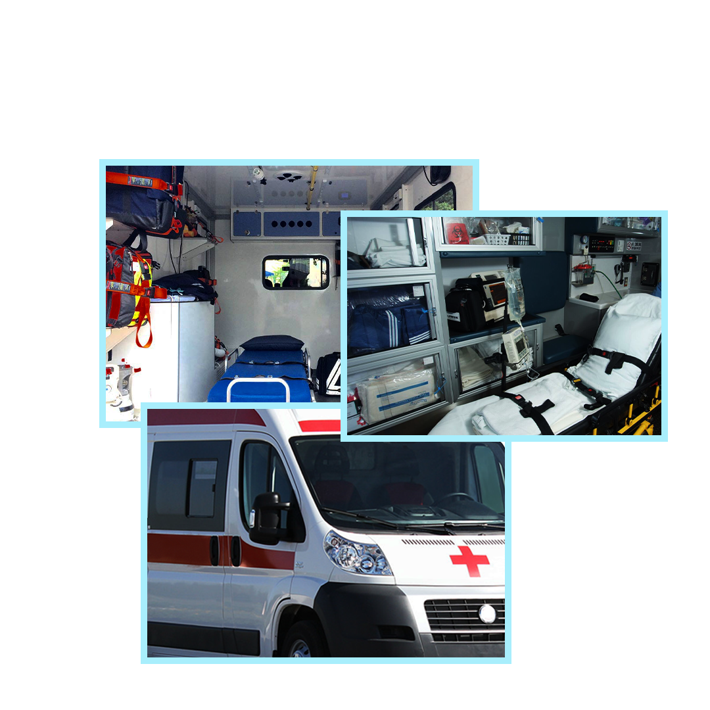

Services

Ambulance équipée
Soins à domicile

Nous vous informons sur vos droits en matière de remboursement et vous accompagnons si besoin dans vos démarches auprès des organismes d'assurance maladie.
Nos équipes assurent de jour comme de nuit les transports assis ou couchés, même le week-end et les jours fériés.
Avec près de 25 véhicules sanitaires et 50 chauffeurs, nous répondons sans délai à vos besoins de transports. A la fin de vos rendez-vous, il y a toujours un véhicule proche et prêt à vous ramener.
Avec une visibilité en temps réel, nous maîtrisons les aléas du trafic. Nous connaissons parfaitement les établissements de santé dans lesquels vous avez rendez-vous, même les plus grands. Nous vous accompagnons jusqu'à votre prise en charge dans le bon service.
Pas de limite géographique, nous pouvons intervenir sur tout le territoire. Que vous soyez en ville ou à la campagne, nous prenons en charge vos transports de la même manière et avec la même efficacité.
Suivez-Nous
Horaires d'ouverture